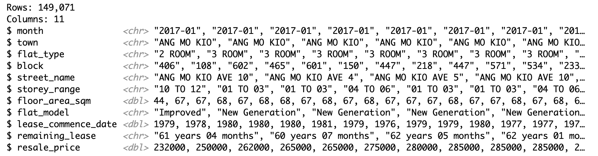
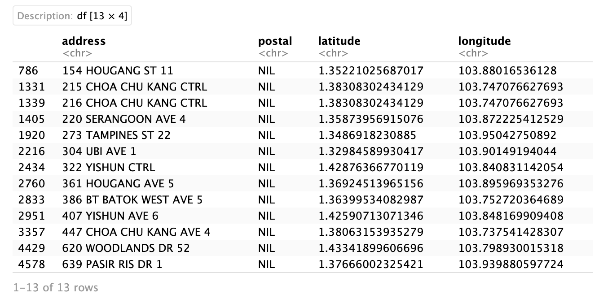

pacman::p_load(olsrr, corrplot, ggpubr, sf, spdep, GWmodel, tmap, tidyverse, gtsummary, sfdep, onemapsgapi, stringr)Take Home Exercise 3
1.0 Overview
1.1 Background
HDB Pricing
1.2 Task
In this take-home exercise, you are tasked to predict HDB resale prices at the sub-market level (i.e. HDB 3-room, HDB 4-room and HDB 5-room) for the month of January and February 2023 in Singapore. The predictive models must be built by using by using conventional OLS method and GWR methods. You are also required to compare the performance of the conventional OLS method versus the geographical weighted methods.
2.0 Setup
2.1 Import Packages
sf - Used for handling geospatial data
sfdep - Used for functions not in spdep
tmap, maptools, kableExtra, plotly - Used for visualizing dataframes and plots
lubridate - Used for handling datetime
tidyr - Used for changing the shape and hierarchy of dataframe
readxl - to read excel data (.xlsx files)
tidyVerse - Used for data transformation and presentation
3.0 Data Wrangling
3.1 Datasets Used
| Type | Name |
|---|---|
| Aspatial | HDB Resale Data |
| Geospatial | |
| Geospatial |
3.2 Aspatial Data
3.2.1 Load Data
resale <- read_csv("data/aspatial/resale-flat-prices-based-on-registration-date-from-jan-2017-onwards.csv")glimpse(resale)
The dataset is based on the period of Jan 2017 to March 2023. It contains 11 columns with 149,071 rows.
3.2.2 Filter Data
The flat type has a high significance (p-value) of 2e-16 at 95% confidence level. This would impact the significance of all the other variables so the data is to be further split.
summary(aov(resale_price ~ flat_type, data = resale))This exercise will use four bedroom flats only and for a shorter time period - Jan 01 2021 to Dec 31 2022 for train data and Jan 01 2023 to Feb 28 2023 for test data.
resale <- resale %>%
filter(flat_type == "4 ROOM") %>%
filter(month >= "2021-01" & month <= "2022-12" | month >= "2023-01" & month <= "2023-02")Code
c = 25501 #nrow(resale)
cat("The dataset now contains", c, "rows.")The dataset now contains 25501 rows.3.2.2 Clean Up Variables
3.2.2.1 Street Address
Extract full address with joint block and street name
resale <- rs_subset %>%
mutate(rs_subset, address = paste(block,street_name))3.2.2.2 Remaining Lease
Extract numeric value of remaining lease from text
Code
str_list <- str_split(resale$remaining_lease, " ")
c = 1 #index counter
for(i in str_list) {
year <- as.numeric(i[1])
month = 0
if(length(i) > 2) { #x years y months
month <- as.numeric(i[3])
}
resale$remaining_lease[c] <- (year + round(month/12, 2))
c = c + 1
}3.2.3 Get Latitude and Longitude
Extract latitude, longitude and postal code of all addresses and store into temporary data frame for further inspection
Code
#list of addresses
add_list <- sort(unique(resale$address))
#dataframe to store api data
postal_coords <- data.frame()
for (i in add_list) {
r <- GET('https://developers.onemap.sg/commonapi/search?',
query=list(searchVal=i,
returnGeom='Y',
getAddrDetails='Y'))
data <- fromJSON(rawToChar(r$content))
found <- data$found
res <- data$results
if (found > 0){
postal <- res[[1]]$POSTAL
lat <- res[[1]]$LATITUDE
lng <- res[[1]]$LONGITUDE
new_row <- data.frame(address= i, postal = postal, latitude = lat, longitude = lng)
}
else {
new_row <- data.frame(address= i, postal = NA, latitude = NA, longitude = NA)
}
postal_coords <- rbind(postal_coords, new_row)
}3.2.3.1 Check for missing values
postal_coords[(is.na(postal_coords$postal) | is.na(postal_coords$latitude) | is.na(postal_coords$longitude) | postal_coords$postal=="NIL"), ]
After looking up the addresses on Google Maps, these were postal codes found. The last address required further searching as its location is not confirmed on Google Maps.
| address | postal |
|---|---|
| 120 SIMEI ST 1 | 520120 |
| 213 BISHAN ST 23 | 570213 |
| 215 CHOA CHU KANG CTRL | 680215 |
| 263 BOON LAY DR | 640263 |
| 339 WOODLANDS AVE 1 | 730339 |
| 361 HOUGANG AVE 5 | 530361 |
| 386 BT BATOK WEST AVE 5 | 650386 |
| 548 SERANGOON NTH AVE 3 | 550548 |
| 634 CHOA CHU KANG NTH 6 | 680634 |
Append found postal codes to the postal coords data frame
Code
indices = c(370, 1283, 1305, 1750, 2545, 2695, 2767, 3993, 4429)
postal_codes = c("520120", "570213", "680215","640263", "730339", "530361", "650386", "550548", "680634")
for (i in 1:length(indices)) {
postal_coords$postal[indices[i]] <- postal_codes[i]
}Join into main apsatial data frame
rs_coords <- left_join(resale, postal_coords, by = c('address' = 'address'))3.2.3.2 Retain relevant fields
rs_coords <- subset(rs_coords, select = c(month, town, storey_range, floor_area_sqm, flat_model, remaining_lease, resale_price, address, postal, latitude, longitude))3.2.4 Write file to RDS
write_rds(rs_coords, "data/aspatial/rds/resale.rds")READDDD
check <- read_rds("data/aspatial/rds/resale.rds")